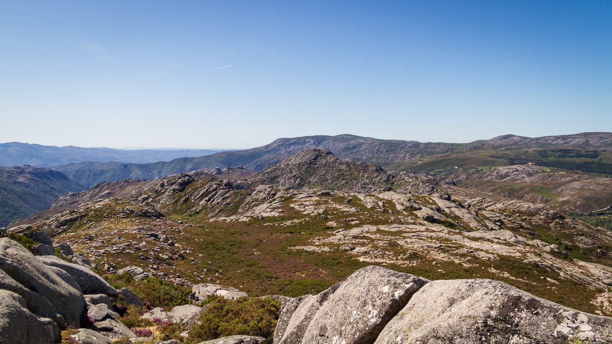
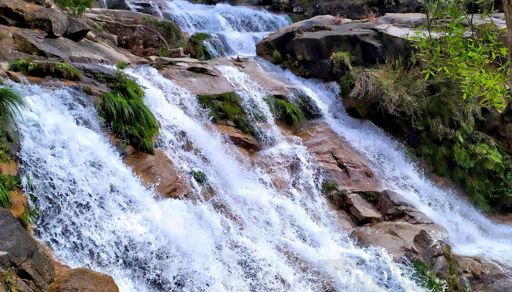

QUEDAS D'ÁGUA NO
PARQUE NACIONAL PENEDA-GERÊS


O Parque Nacional Peneda-Gerês (PNPG) é o único parque nacional em Portugal. Este é composto por um património histórico, cultural e natural muito diversificado, devendo assim ser preservado. Cada vez mais, esta área protegida é eleita para o turismo da Natureza e atividades relacionadas.
Carregue aqui (Site ICNF) para saber mais sobre esta área protegida.